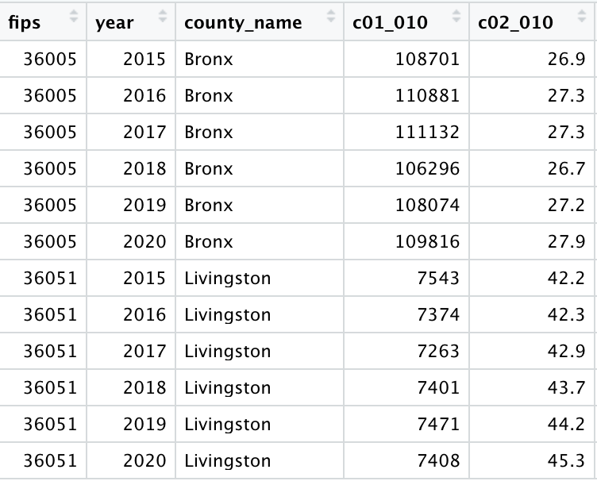

library(tidyverse)
library(skimr)R Lab 1 - ggplot visualization
Loading R packages
Question 1
Q1a
Read the data file, bikeshare_cleaned.csv, as the data.frame object with the name, bikeshare, using (1) the read_csv() function and (2) its URL, https://bcdanl.github.io/data/bikeshare_cleaned.csv.
Use the data.frame bikeshare for the rest of questions in Question 1.
Q1b
Provide both (1) ggplot codes and (2) a couple of sentences to describe the distribution of cnt.
Q1c
Provide both (1) ggplot codes and (2) a couple of sentences to describe the distribution of cnt by year and month.
Q1d
Provide both (1) ggplot codes and (2) a couple of sentences to describe the distribution of temp by year and month.
Q1e
Provide both (1) ggplot codes and (2) a couple of sentences to describe the distribution of hum by year and month.
Q1f
Provide both (1) ggplot codes and (2) a couple of sentences to describe the distribution of windspeed by year and month.
Q1g
Provide both (1) ggplot codes and (2) a couple of sentences to describe the relationship between temp and cnt.
Q1h
Provide both (1) ggplot codes and (2) a couple of sentences to describe the relationship between temp and cnt by year and month.
Q1i
Provide both (1) ggplot codes and (2) a couple of sentences to describe the relationship between weather_cond and cnt.
Q1j
Provide both (1) ggplot codes and (2) a couple of sentences to describe the relationship between weather_cond and cnt by hr.
Q1k
Provide both (1) ggplot codes and (2) a couple of sentences to describe the relationship between wkday and cnt.
Q1l
Provide both (1) ggplot codes and (2) a couple of sentences to describe the relationship between wkday and cnt by hr.
Question 2
Q2a
Read the data file, NY_school_enrollment_socioecon.csv, as the data.frame object with the name, NY_school_enrollment_socioecon, using (1) the read_csv() function and (2) its URL, https://bcdanl.github.io/data/NY_school_enrollment_socioecon.csv.
For description of variables in NY_school_enrollment_socioecon, refer to the file, ny_school_enrollment_socioecon_description.zip, which is in the Files section in our Canvas web-page. (I recommend you to extract the zip file, and then read the file, ny_school_enrollment_socioecon_description.csv, using Excel or Numbers.)
Here are some details about the data.frame,
NY_school_enrollment_socioecon:The geographic and time units of observation (row) in the data.frame,
NY_school_enrollment_socioecon, are New York county and year.
| FIPS | year | county_name | pincp | c01_001 | c02_002 |
|---|---|---|---|---|---|
| 36001 | 2015 | Albany | 55793 | 84463 | 4.7 |
- For example, the observation above means that in Albany county in year 2015 …
- Average personal income of people is $55,793.
- Population 3 years and over enrolled in school is 84,463.
- Percent of population 3 years and over enrolled in nursery school and preschool is 4.7%.
- The following is sample observations from Bronx and Livingston counties:

The following describes the variables:
c01_010: Total!!Population enrolled in college or graduate schoolSo,
c01_010is total population enrolled in college or graduate school;c02_010: Percent!!Population enrolled in college or graduate schoolSo,
c02_010is a percent of total population enrolled in college or graduate school;In which county is more likely for a person to be enrolled in a college or graduate school?
A county’s college enrollment level can be represented by an overall tendency of that county’s residents to be enrolled in college (as long as we are interested in analyzing how human behaves overall).
The size of a county’s population enrolled in college or graduate school (
c01_010) may not be appropriate to represent a county’s college enrollment level.- A county’s larger size of population enrolled in college does not necessarily mean people in people in that county are likely to be enrolled in college.
Consider the following example:
| County | Total.Population | Bachelor.s.Degree | High.School | Percent.of.Bachelor.s.Degree | Percent.of.High.School |
|---|---|---|---|---|---|
| A | 100,000 | 1,000 | 99,000 | 1.0% | 99.0% |
| B | 1,000 | 999 | 1 | 99.9% | 0.1% |
Although County A has the larger number of people that have bachelor’s degrees than County B, it is more appropriate to say that people in County B have a higher college enrollment than people in County A.
This is because the overall tendency of County B’s people to attend college is stronger than that of County A’s people.
Similarly, to represent a standard of living of people in a country, we do not use a country’s gross domestic product (GDP) but its GDP per capita (GDP per capita is GDP devided by population).
- For example, China records the second largest GDP in the world as of now. However, World Bank still considers China a middle-income country, because of its relatively low level of GDP per capita.
Q2b
Provide both (1) ggplot codes and (2) a couple of sentences to describe the relationship between college enrollment and educational attainment of population 45 to 64 years, and how such relationship varies by the type (public or private) of colleges.
Q2c
Provide both (1) ggplot codes and (2) a couple of sentences to describe how the relationships described in Q3b vary by gender of population 45 to 64 years.
Q2d
Provide both (1) ggplot codes and (2) a couple of sentences to describe how the relationships described in Q3b vary by gender of college enrollment.